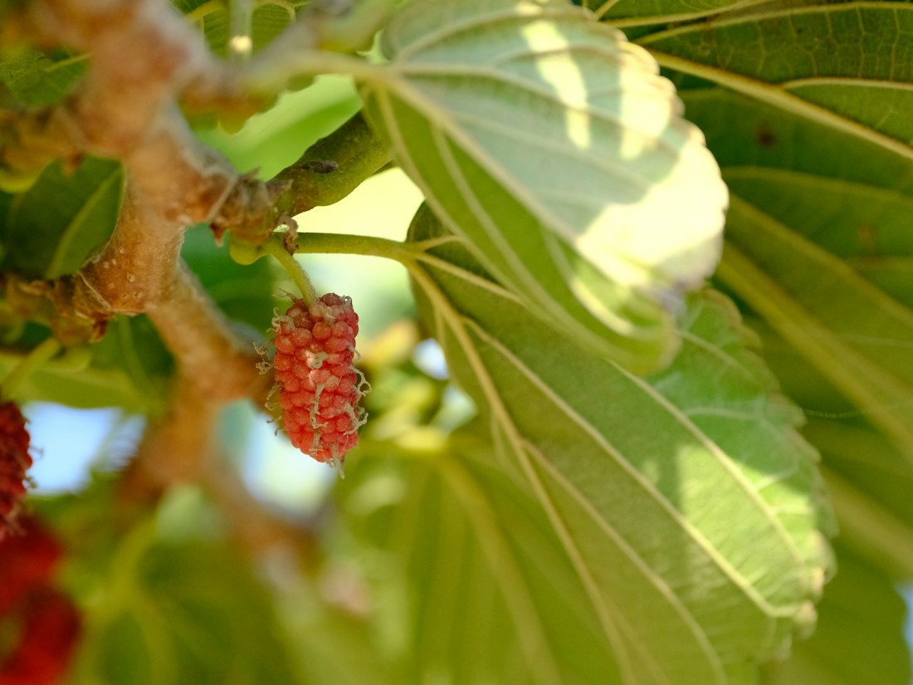
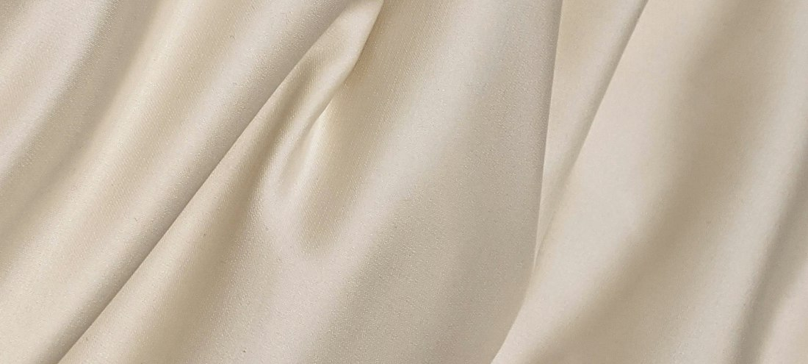
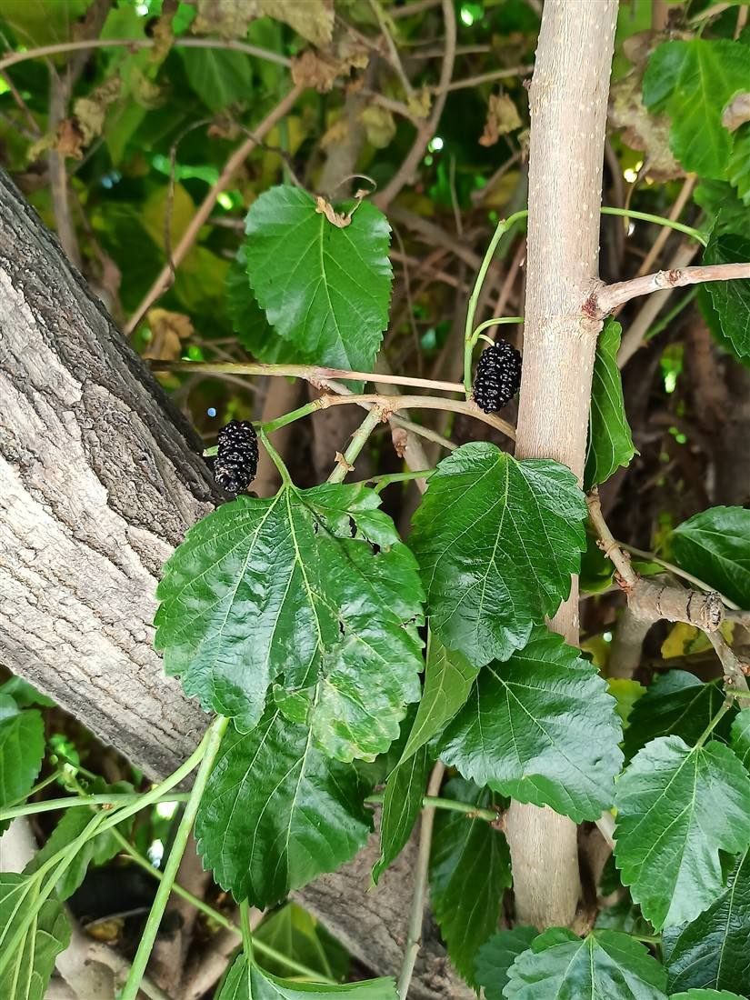
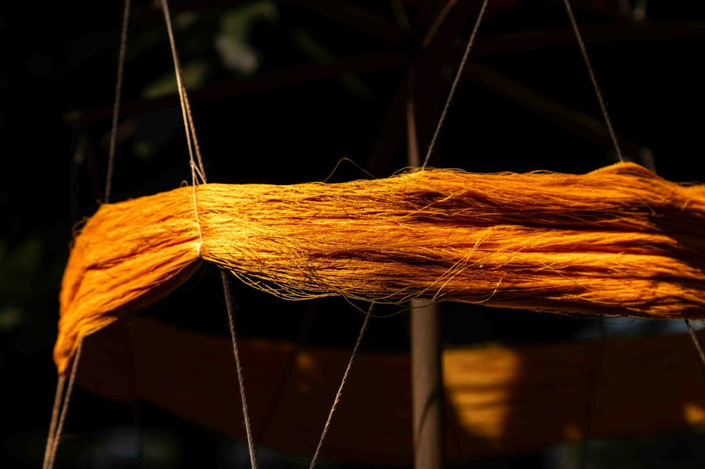
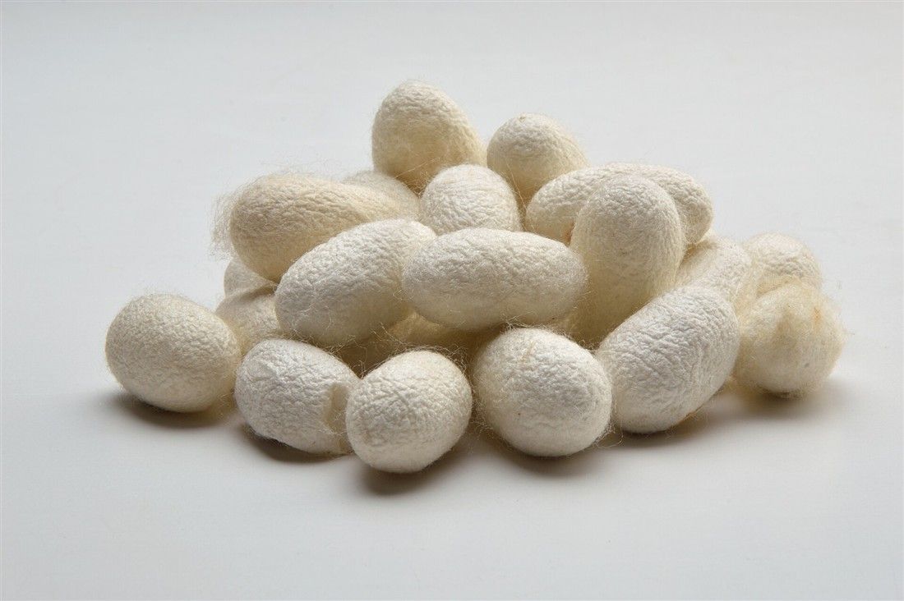
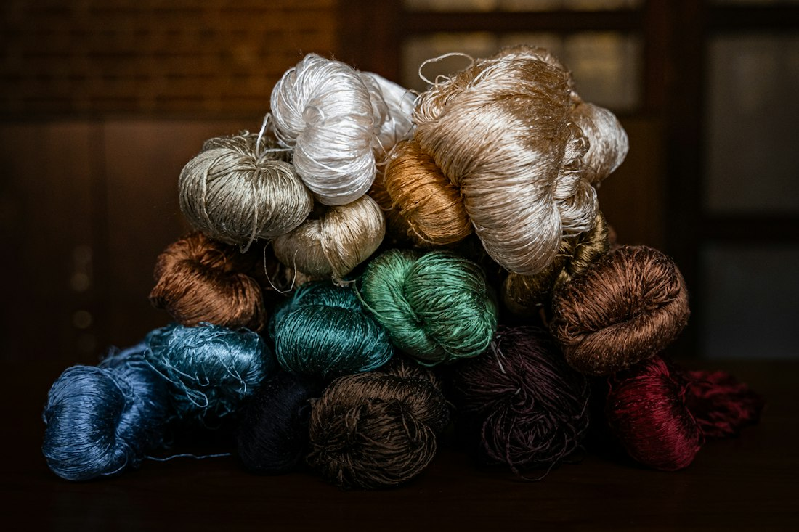
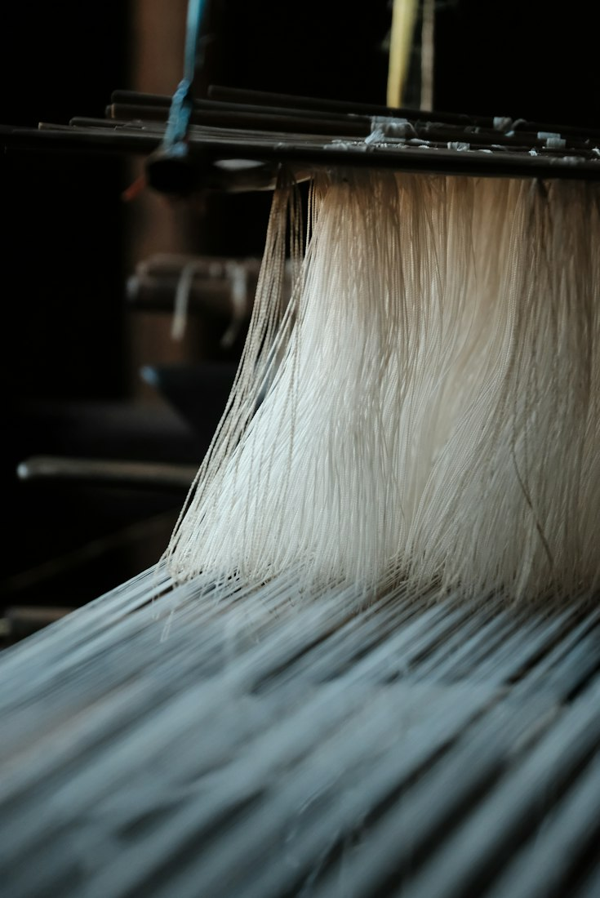
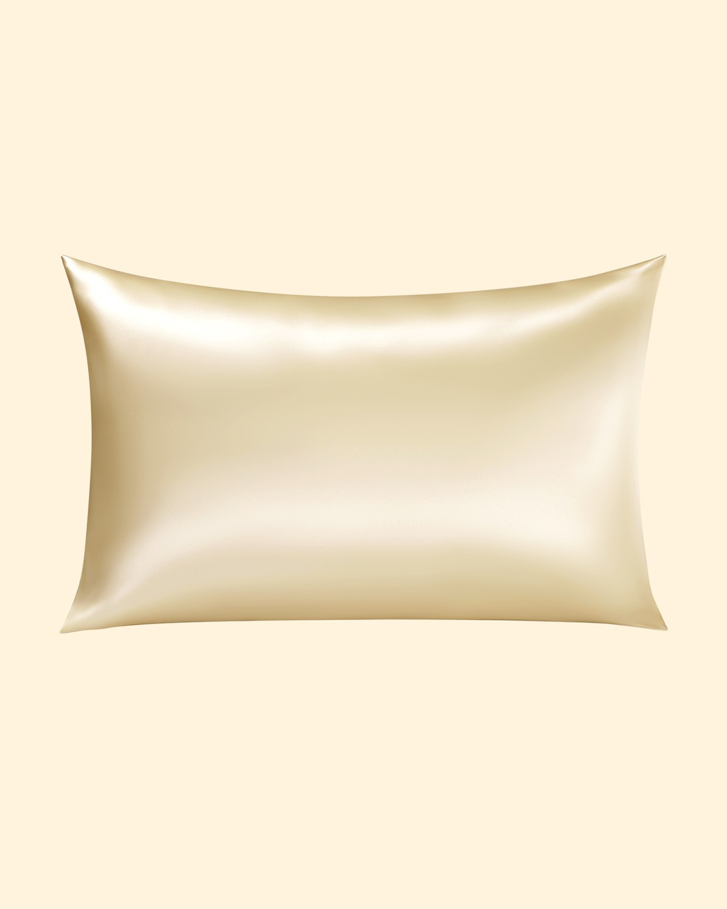
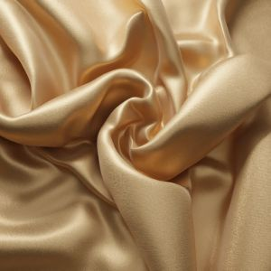

La nuit,en soie.
Velvell, des taies d'oreiller en soie de mûrier. La boutique ouvre bientôt.
Rejoindre la liste d'attenteD'où vient la soie de mûrier
Une taie Velvell naît d'une feuille de mûrier, d'un cocon et d'un seul fil.


Le ver à soie Bombyx mori ne mange que des feuilles de mûrier, d'où le nom de soie de mûrier. Chaque cocon est fait d'un fil continu de plusieurs centaines de mètres.
Du mûrier à la taie
-
La feuille
Les vers ne mangent que du mûrier blanc. Leur soie est réputée la plus fine et la plus régulière.

-
Le ver
Il grandit pendant quatre à six semaines sur des claies, puis cesse de manger.

-
Le cocon
En deux à trois jours, il s'enferme dans un cocon fait d'un seul fil continu.

-
Le dévidage
Plusieurs cocons sont dévidés ensemble pour former un fil de soie grège.

-
Le tissage
Le fil est tissé en satin : une face lisse et brillante, côté visage.

-
La taie
Prévue en 50 × 70 cm, fermeture invisible, en champagne et en ivoire.

109 g/m²
Une taie de 50 × 70 cm contient environ 76 g de soie.
Le poids de la soie
La soie se pèse en momme. Un momme vaut 4,34 grammes de soie par mètre carré : plus le chiffre est haut, plus le tissu est dense, opaque et durable.
25 momme : la soie que nous testons en premier, plus épaisse que les 19 et 22 momme courants.
Qui est Velvell
- Marque française
- Un seul objet pour commencer

Velvell est une marque française de linge de nuit en soie. Nous commençons par un seul objet, la taie d'oreiller, et nous prenons le temps de bien la choisir.Nous comparons en ce moment les ateliers et leurs échantillons, en 22 et en 25 momme. Nous ne vendrons que la soie qui nous convainc au toucher, au lavage et dans le temps.
Vos questions
- 100 % soie de mûrier
- Taille prévue : 50 × 70 cm
- Prix annoncé d'abord aux inscrits
Quand la boutique ouvre-t-elle ?
Dès que les échantillons auront passé nos essais. Les inscrits seront prévenus les premiers, par un seul e-mail.
Combien coûtera une taie ?
Le prix n'est pas encore fixé : il dépend de la soie retenue. Nous l'annoncerons d'abord aux inscrits.
Qu'est-ce que le momme ?
L'unité de poids de la soie : 1 momme correspond à 4,34 g par m². Une soie de 25 momme est plus dense qu'une soie de 19.
La soie sera-t-elle certifiée ?
Nous ne retiendrons qu'un atelier qui fournit un certificat OEKO-TEX Standard 100 vérifiable, et nous publierons son numéro.
Comment entretenir la soie ?
À la main ou en cycle délicat à 30 °C, avec une lessive douce, puis séchage à plat à l'abri du soleil. Les consignes exactes figureront sur l'étiquette.
Que faites-vous de mon e-mail ?
Il sert uniquement à vous prévenir de l'ouverture de Velvell. Vous pouvez vous désinscrire à tout moment, en un clic.
Être prévenu de l'ouverture
Laissez votre e-mail : nous vous écrirons une fois, le jour de l'ouverture.